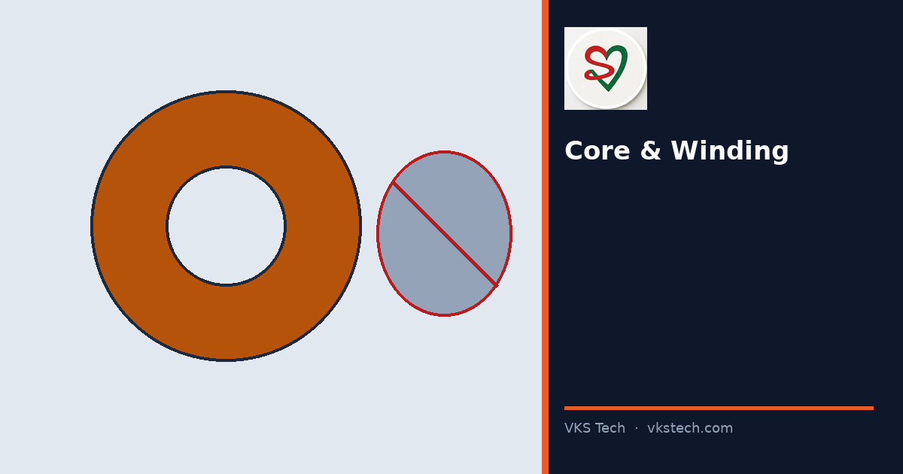

🌀 Soft Centres and Crushed Cores Often Start With the Core — Not Only With the Wind Recipe.
📖 11-min read · Winding & Material Handling · Quality + Operators + Stores
Many soft-centre and telescoping complaints are blamed on the winding tension recipe. In a large percentage of cases the root cause is upstream: wrong core ID, low crush strength, oval or damaged cores, or cores that were stored badly. Once the core collapses or loses roundness under the weight of the roll, the film becomes baggy or hard-edged and the problem travels all the way to the customer or the pouching line.
This article gives the practical controls that prevent core-related winding defects.
- Core ID must match the chucks / shafts on every machine
- Crush strength must match expected roll weight and OD
- Reject oval, crushed, wet or damaged cores before loading
- Winding tension + taper must still be correct for the structure
- Cheap cores that fail once cost more than the purchase saving
1. Core Selection — The Numbers That Matter
| Parameter | Why it matters | Practical check |
|---|---|---|
| Inner diameter (ID) | Mismatch → slip, vibration, uneven wind | Measure vs chuck size; keep matched stock |
| Wall thickness / crush | Low crush → centre collapse under weight | Specify minimum crush for target OD/weight |
| Length / width | Short cores allow edge overhang and damage | Core length ≥ film width + small allowance |
| Material (paper / plastic) | Paper cores absorb moisture and weaken | Store dry; reject soft or oval cores |
2. Incoming and Pre-Load Checks
- Visual: no ovality, no crushed ends, no wet patches, no deep scores
- Dimensional: sample check ID and length against the machine list
- Storage: cores should be kept off the floor, dry and protected from edge damage
- FIFO: older cores that have been stored long can lose strength — use them on lighter rolls or discard
3. Winding Recipe Still Matters
Even with perfect cores you need correct tension profile and taper. Typical issues:
- Too high start tension → hard core, stretch, residual stress
- Too low or no taper → soft outer layers, telescoping risk
- Structure change without recipe change → baggy or hard rolls
Log the core type and winding recipe on the job card so the next shift and the customer complaint investigation have data.
Add core quality to the stores checklist and the operator start-up list. It is one of the highest-leverage, lowest-cost controls in a converting plant.
🌀 सॉफ्ट सेंटर और कुचले कोर अक्सर कोर से शुरू होते हैं — सिर्फ विंड रेसिपी से नहीं।
📖 11-मिनट पढ़ें · विंडिंग · क्वालिटी + ऑपरेटर + स्टोर्स
कई सॉफ्ट-सेंटर और टेलीस्कोपिंग शिकायतें विंडिंग टेंशन पर डाल दी जाती हैं। असल में बड़ी संख्या में समस्या अपस्ट्रीम होती है: गलत कोर ID, कम क्रश स्ट्रेंथ, अंडाकार या क्षतिग्रस्त कोर। एक बार कोर वजन के नीचे ढह जाए तो फिल्म बैगी हो जाती है और समस्या ग्राहक या पाउचिंग लाइन तक जाती है।
- कोर ID चक/शाफ्ट से मैच हो
- क्रश स्ट्रेंथ लक्ष्य वजन/OD के अनुसार
- अंडाकार या क्षतिग्रस्त कोर लोडिंग से पहले रिजेक्ट
- टेंशन + टेपर स्ट्रक्चर के अनुसार